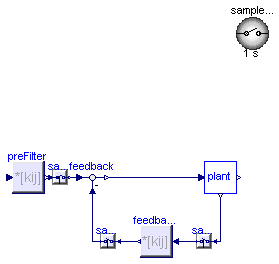
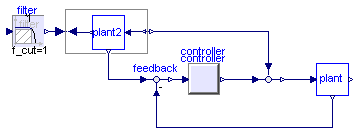
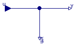
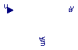

| Name | Description |
|---|---|
| Template for single-input single-output plants | |
| Template for multi-input multi-output plants | |
| MIMO plant template | |
| SimpleStateSpaceControl | Template for simple state feedback controllers with an optional pre-filter |
| Output the sum of the two inputs (inputs are on the left and below) | |
| TwoDegreesOfFreedomControlSISO | Template of a controller with two structural degrees of freedom and an inverse plant model in forward path |
| SISO dummy plant model which can be used in templates | |
| SISO plant template |
 Modelica_LinearSystems2.Controller.Templates.PartialPlantSISO
Modelica_LinearSystems2.Controller.Templates.PartialPlantSISO

| Type | Name | Description |
|---|---|---|
| output RealOutput | y | |
| input RealInput | u | |
| output RealOutput | ym |
partial model PartialPlantSISO "Template for single-input single-output plants"Modelica.Blocks.Interfaces.RealOutput y; Modelica.Blocks.Interfaces.RealInput u; Modelica.Blocks.Interfaces.RealOutput ym; end PartialPlantSISO;
Modelica_LinearSystems2.Controller.Templates.PartialPlantMIMO
| Type | Name | Default | Description |
|---|---|---|---|
| Integer | n | 1 | system order |
| Integer | m | 1 | number of inputs |
| Integer | l | 1 | number of measurable outputs |
| Boolean | additionalMeasurableOutputs | true |
| Type | Name | Description |
|---|---|---|
| output RealOutput | y[n] | |
| input RealInput | u[m] | |
| output RealOutput | ym[l] |
partial model PartialPlantMIMO "Template for multi-input multi-output plants" parameter Integer n=1 "system order"; parameter Integer m=1 "number of inputs"; parameter Integer l=1 "number of measurable outputs"; parameter Boolean additionalMeasurableOutputs=true;Modelica.Blocks.Interfaces.RealOutput y[n]; Modelica.Blocks.Interfaces.RealInput u[m]; Modelica.Blocks.Interfaces.RealOutput ym[l] if additionalMeasurableOutputs; end PartialPlantMIMO;
Modelica_LinearSystems2.Controller.Templates.PlantTemplate
| Type | Name | Default | Description |
|---|---|---|---|
| Integer | n | 1 | system order |
| Integer | m | 1 | number of inputs |
| Integer | l | 1 | number of measurable outputs |
| Boolean | additionalMeasurableOutputs | true |
| Type | Name | Description |
|---|---|---|
| output RealOutput | y[n] | |
| input RealInput | u[m] | |
| output RealOutput | ym[l] |
partial model PlantTemplate "MIMO plant template" parameter Integer n=1 "system order"; parameter Integer m=1 "number of inputs"; parameter Integer l=1 "number of measurable outputs"; parameter Boolean additionalMeasurableOutputs=true;Modelica.Blocks.Interfaces.RealOutput y[n]; Modelica.Blocks.Interfaces.RealInput u[m]; Modelica.Blocks.Interfaces.RealOutput ym[l] if additionalMeasurableOutputs; end PlantTemplate;

| Type | Name | Default | Description |
|---|---|---|---|
| PartialPlantMIMO | plant | redeclare Modelica_LinearSys... |
partial model SimpleStateSpaceControl "Template for simple state feedback controllers with an optional pre-filter"MatrixGain feedbackMatrix; MatrixGain preFilter(K=[0]); Modelica.Blocks.Math.Feedback feedback[feedbackMatrix.nout]; replaceable Modelica_LinearSystems2.Controller.Templates.PartialPlantMIMO plant(n=feedbackMatrix.nin, m=feedbackMatrix.nout) constrainedby Modelica_LinearSystems2.Controller.Templates.PartialPlantMIMO; Sampler samplerPreFilter[feedbackMatrix.nout]; Sampler samplerFeedback[feedbackMatrix.nout]; Sampler samplerOut[feedbackMatrix.nin]; inner SampleClock sampleClock; equationconnect(feedback.y, plant.u); connect(feedbackMatrix.u, samplerOut.y); connect(samplerFeedback.u, feedbackMatrix.y); connect(samplerFeedback.y, feedback.u2); connect(preFilter.y, samplerPreFilter.u); connect(samplerPreFilter.y, feedback.u1); connect(plant.ym, samplerOut.u); end SimpleStateSpaceControl;
 Modelica_LinearSystems2.Controller.Templates.Add2
Modelica_LinearSystems2.Controller.Templates.Add2

This blocks computes output y as difference of the commanded input u1 and the feedback input u2:
y = u1 - u2;
Example:
parameter: n = 2
results in the following equations:
y = u1 - u2
| Type | Name | Description |
|---|---|---|
| input RealInput | u1 | |
| input RealInput | u2 | |
| output RealOutput | y |
block Add2 "Output the sum of the two inputs (inputs are on the left and below)"input Modelica.Blocks.Interfaces.RealInput u1; input Modelica.Blocks.Interfaces.RealInput u2; output Modelica.Blocks.Interfaces.RealOutput y; equation y = u1 + u2;end Add2;

Template of a controller with two structural degrees of freedom and an inverse plant model in forward path. The functionality of such contorl system structures is discribed in [1]
[1] Looye, G. et al, "Nonlinear inverse moldes for control",
Proceedings Modelica Conference 2005, pp. 267-279, 2005.
| Type | Name | Default | Description |
|---|---|---|---|
| Integer | l | 1 | number of measurable outputs |
| Boolean | additionalMeasurableOutputs | true | |
| PartialSISO | controller | redeclare Modelica_LinearSys... | |
| Plant_SISO | plant | redeclare Plant_SISO plant(l... | |
| Plant_SISO | plant2 | redeclare Plant_SISO plant2(... |
partial model TwoDegreesOfFreedomControlSISO "Template of a controller with two structural degrees of freedom and an inverse plant model in forward path" parameter Integer l = 1 "number of measurable outputs"; parameter Boolean additionalMeasurableOutputs = true;Modelica.Blocks.Math.Feedback feedback[plant.l]; Modelica_LinearSystems2.Controller.Internal.Add2 add; Modelica_LinearSystems2.Controller.Filter filter; replaceable Modelica_LinearSystems2.Controller.Interfaces.PartialSISO controller constrainedby Interfaces.PartialSISO; replaceable Plant_SISO plant(l=l, additionalMeasurableOutputs=additionalMeasurableOutputs) constrainedby PlantTemplate_SISO; Modelica.Blocks.Math.InverseBlockConstraints forwardControlModel; replaceable Plant_SISO plant2(l=l, additionalMeasurableOutputs= additionalMeasurableOutputs) constrainedby PlantTemplate_SISO; equationconnect(controller.u, feedback[1].y); connect(plant.ym, feedback.u2); connect(plant2.y, forwardControlModel.u2); connect(plant2.u, forwardControlModel.y2); connect(feedback.u1, plant2.ym); connect(filter.y, forwardControlModel.u1); connect(controller.y, add.u2[1]); connect(add.u1[1], forwardControlModel.y1); connect(add.y[1], plant.u); end TwoDegreesOfFreedomControlSISO;
 Modelica_LinearSystems2.Controller.Templates.Plant_SISO
Modelica_LinearSystems2.Controller.Templates.Plant_SISO
| Type | Name | Default | Description |
|---|---|---|---|
| Integer | l | 1 | number of measurable outputs |
| Boolean | additionalMeasurableOutputs | true |
| Type | Name | Description |
|---|---|---|
| output RealOutput | y | |
| input RealInput | u | |
| output RealOutput | ym[l] |
model Plant_SISO "SISO dummy plant model which can be used in templates" extends PlantTemplate_SISO; equationconnect(u, ym[1]); connect(u, y); end Plant_SISO;
Modelica_LinearSystems2.Controller.Templates.PlantTemplate_SISO
| Type | Name | Default | Description |
|---|---|---|---|
| Integer | l | 1 | number of measurable outputs |
| Boolean | additionalMeasurableOutputs | true |
| Type | Name | Description |
|---|---|---|
| output RealOutput | y | |
| input RealInput | u | |
| output RealOutput | ym[l] |
partial model PlantTemplate_SISO "SISO plant template" parameter Integer l = 1 "number of measurable outputs"; parameter Boolean additionalMeasurableOutputs = true;Modelica.Blocks.Interfaces.RealOutput y; Modelica.Blocks.Interfaces.RealInput u; Modelica.Blocks.Interfaces.RealOutput ym[l] if additionalMeasurableOutputs; end PlantTemplate_SISO;